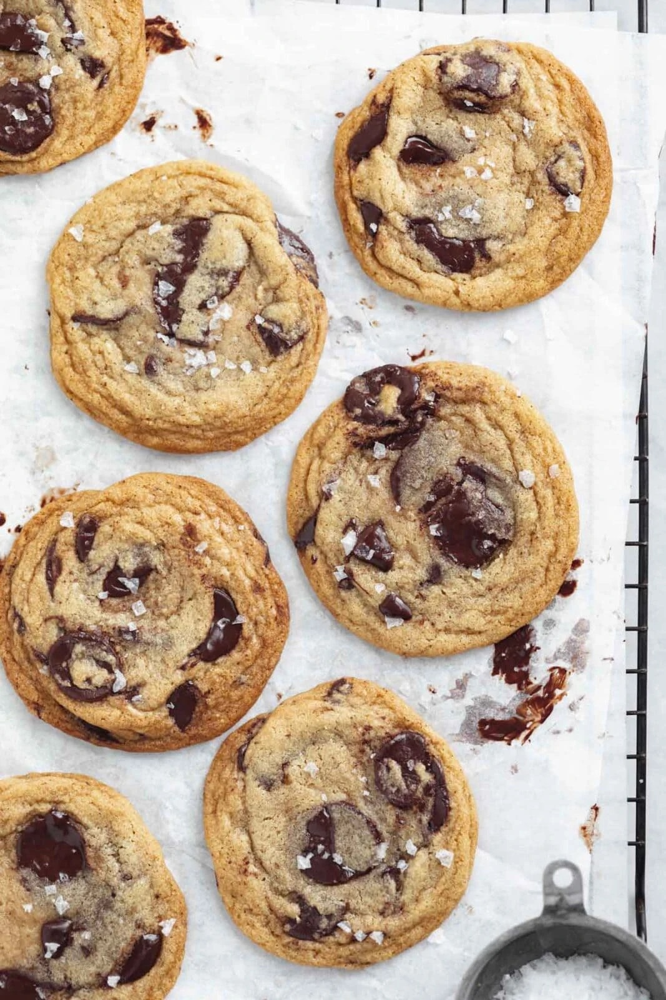

Cookie Recipe

Description
Your search for the best chocolate chip cookies ends here. This chewy chocolate chip cookie recipe is made with browned butter and huge chunks of chocolate for the perfect, crunchy on the outside, gooey in the middle cookie of your dreams. Pair one of these bad boys with glass of cold milk for the best cookies and milk of your life?
Ingredients
- 3/4 cup (168 g) unsalted butter
- 1 cup (200 g) brown sugar, packed
- 1/4 (50 g) cup granulated sugar
- 1 egg + 1 egg yolk, room temperature
- 1 tablespoon pure vanilla extract
- 1 3/4 cup (220 g) all-purpose flour
- 3/4 teaspoon baking soda
- 3/4 teaspoon kosher salt + more flaky seat salt for sprinkling
- 1 1/2 cups semi sweet chocolate, chopped
Method
- Brown the butter over medium heat, stirring constantly until the butter begins to foam and turns a golden brown, emitting a nutty aroma. Make sure you only brown the butter lightly. When butter browns the liquid evaporates off which can dry out your dough. As soon as the butter starts to turn brown and smell nutty, take it off the heat to prevent any more liquid from escaping. Take butter off the heat and allow to cool.
- In a large mixing bowl combine the cooled brown butter, brown sugar, and white sugar. Beat until mixed together. Add in the egg, egg yolk, and vanilla extract. Mix well.
- In separate bowl mix together the flour, salt and baking soda. Mix half the dry ingredients into the wet until everything comes together. Slowly add in the remaining flour a little bit at a time, stopping if the dough starts to get too dry. Fold in the chocolate. Do not over mix.
- Refrigerate the cookie dough for at least a half hour, or overnight.
- When you are ready to bake the cookies, preheat the oven to 350°F and line a cookie sheet with parchment paper. Use a 1.5 or 2 ounce cookie scoop to scoop the cookie dough out into balls, placing them 2 inches apart on the prepared sheet. Bake for 11 minutes*, or until the edges are just golden brown and the centers have puffed up but are still gooey.
- Allow to cool before eating!